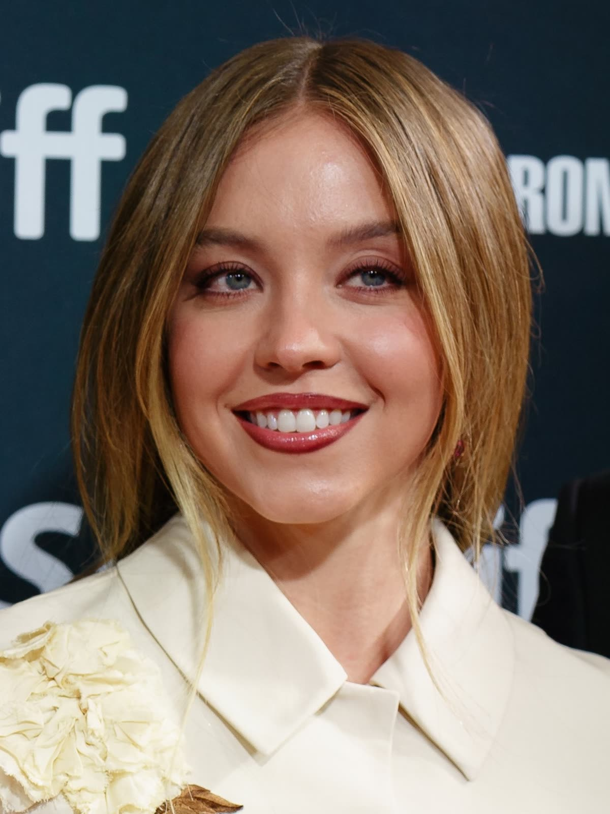

Latest news › NEWS
Sydney Sweeney's Cut Devil Wears Prada 2 Cameo Explained
Writer Aline Brosh McKenna confirmed Sydney Sweeney is not in The Devil Wears Prada 2, and an insider says her planned scene felt out of place.
By Sweeney Report · October 26, 2026

Sydney Sweeney's planned cameo in The Devil Wears Prada 2 did not make it into the final film. According to OK Magazine, writer Aline Brosh McKenna confirmed in an interview that Sweeney does not appear in the finished cut. An insider reportedly told the outlet that the filmmakers felt the scene did not fit the story they were telling.
What the scene reportedly involved
OK Magazine reported, citing a source, that Sweeney was set to play herself, a celebrity client of Emily Blunt's character, Emily Charlton. The moment reportedly ran about three minutes and was placed early in the film at Dior's U.S. headquarters in New York City.
The scene would reportedly have featured Anne Hathaway's Andy Sachs, Meryl Streep's Miranda Priestly and Stanley Tucci's Nigel Kipling visiting Charlton at the fashion house. The film was directed by David Frankel.
The insider said the team valued Sweeney's involvement and that cutting the scene was not an easy call. The reason given was that the sequence felt out of place within the overall narrative.
How the rumors started
OK Magazine said speculation began the previous summer, when fans believed they had spotted Sweeney on the New York set alongside Blunt. A video that has since been deleted reportedly showed a blonde woman hiding her face behind an umbrella, which fueled excitement online. That video was not confirmed to show Sweeney.
In a November interview, Sweeney played down the talk. According to OK Magazine, she said, "I don't know what you're talking about."
Responses so far
OK Magazine reported that representatives for Sweeney and for Frankel did not respond to requests for comment on the decision. The outlet noted that the sequel brought back Streep, Hathaway, Tucci and Blunt, and added newcomers including Lucy Liu and Justin Theroux.
Beyond McKenna's confirmation, the details of the scene come from an unnamed insider, so they remain unverified.
What's next: Neither Sweeney nor the filmmakers have publicly addressed the cut scene in detail. Fans may get more clarity if McKenna or Frankel discuss it further, or if deleted material is ever released. Would you have wanted to see that cameo?
Sources
- OK Magazine — Revisiting Sydney Sweeney's 'Devil Wears Prada 2' Cameo Cut
Spotted an error? Email will.jacquier.007@gmail.com and we will correct it.